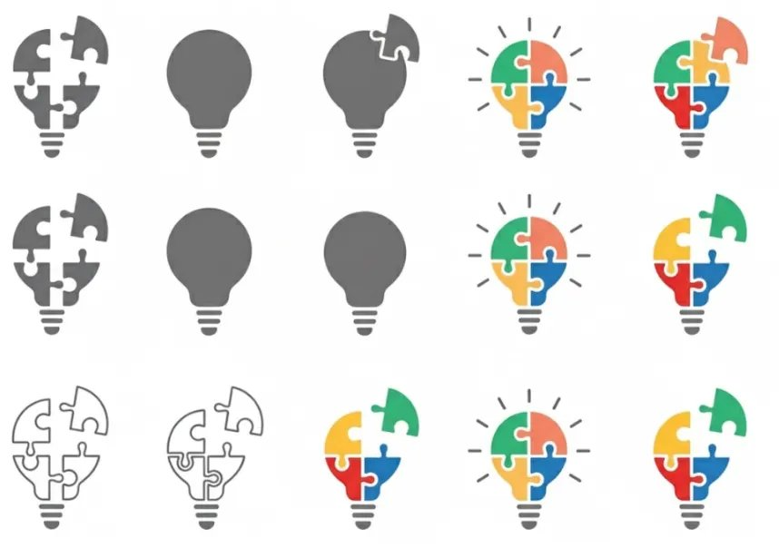
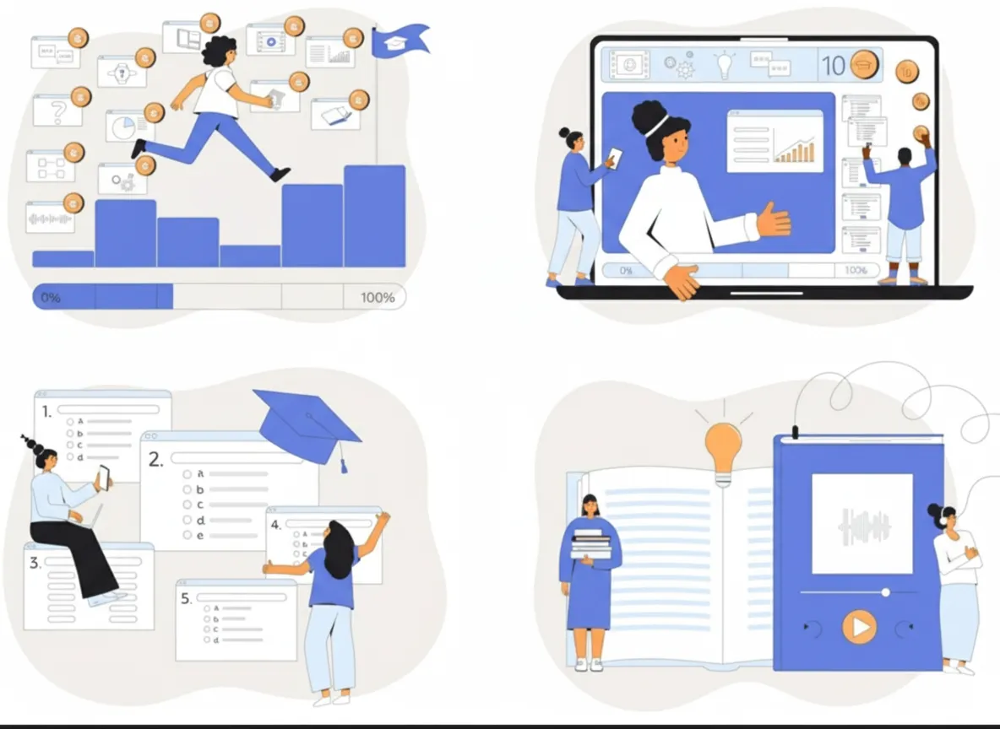
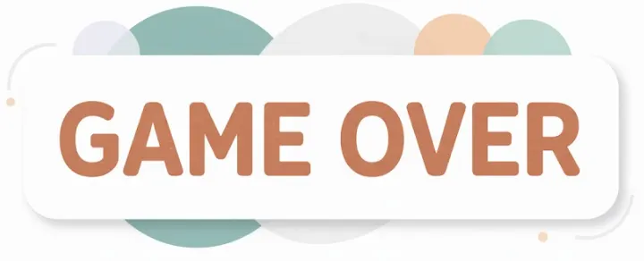
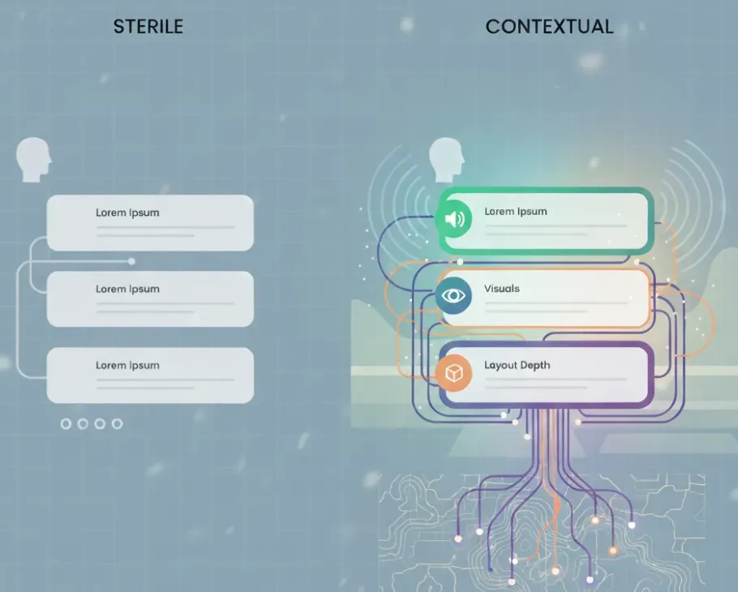
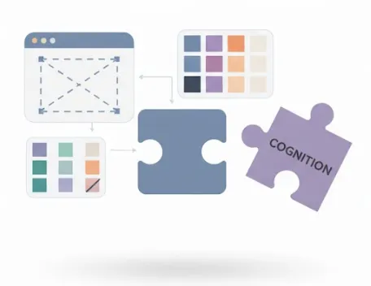
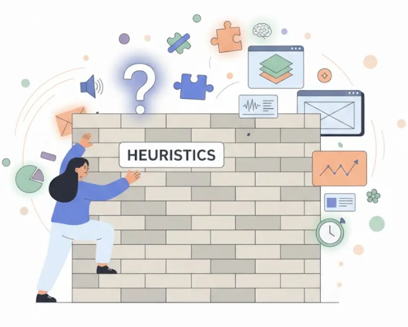
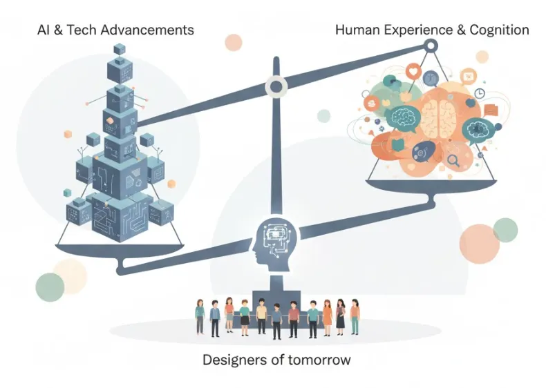

Our brains remember best when the world we see around us matches the one we learned in.
In design: Experiences, digital or otherwise, resonate when the interface or product resembles the world it belongs to.
A designer named Ava encounters the ever-so familiar challenge of a new user problem at the edtech firm where she currently works.
The problem? Their current online learning platform, whilst praised by leadership for its clean interface and sleek visuals, is not achieving its ultimate goal: helping students apply what they learn.
The good news? Students are acing the digital practice quizzes.
The bad? They're faltering on real-life exams.
That's one big problem…
As a self-professed visual enthusiast (as I am sure many of us designers are), Ava begins by doing what feels most intuitive: refining the interface. She experiments with new layout structures and content reorganization.

She even goes so far as to venture into lesson gamification (all thanks to her late-night Duolingo sessions)!

Confident in her redesigned platform, it's straight to usability testing.
The result?

No improvement. The gap between students' digital practice and real performance remain exactly the same…
Disappointed and confused, she lingers back into the after-hours barren office, staring at a screen that now feels adversarial.
Out of the corner of her eye, a book left open on a colleague's desk catches her attention — Trends in Cognitive Science 2007.
Out of curiosity, she flips through the pages.
And unknowingly, is transported away from the designer's seat and into the user's mind.
A thought began to form:
"What if the problem has nothing to do with what is on the interface… but how it is being received?"
With her attention now engrossed, she lands on a particular study, "Augmenting Context-Dependent Memory" by Jeanine K. Stefanucci and colleagues (2007).
Little did she know that she was about to be exposed to the power of context in aiding digital memory retention.
The study found that when interfaces contained information accompanied by additional associated spatial, aural, and visual contexts, memory performance increased by 131% (yes, you read that right) compared to the same information presented on generic, sterile, context-free interfaces (ie. what you see as you read this article).

Something clicks.
The problem wasn't visual; it was cognitive.
The realization? Students were learning within one digital context but being tested in an entirely different one.
In other words,
The current platform lacked the contextual cues successfully mimicking the exam room.
Ava's solution? Bring context into the platform so that it realistically resembles where the information needs to be recalled.
That night, she began redesigning the quiz experience — not as a prettier interface, but as a cognitively informed one.
She introduced exam-like conditions: timers, audio announcements, mixed question formats, and subtle environmental cues to mimic real exam settings.
With newfound confidence, one now grounded in a cognitive user-first mindset, it's back to usability testing.
The result?
Transformative.
Students not only retained more information on the platform but also performed significantly better in their actual exams.
Ava cracked the cognitive code.
In design, it is not enough to focus solely on what's displayed or how users interact, but also on how it is encoded and retrieved in the mind of the user across different contexts.
Looking back, Ava couldn't help but think:
"Had I learned this in my design education, endless amounts of frustration and confusion could have been avoided.
If one of my required readings was a study from the journal I just read, I would be so much more equipped to design not just for the eye, but for the mind."
Ava's story is just one instance among countless design challenges where having a deeper cognitive foundation holds immense value.
It reveals design's missing language: cognition.

Ava's story isn't just about her; it's about us: a living, breathing, and growing creative community of designers, educators, and leaders.
Her story represents an avenue towards a larger problem (or rather, an opportunity) that today's design pedagogy faces:
A lack of diverse cognitive understanding in how we think, teach, and ultimately, design.
As a design student myself, I have encountered cognitive concepts and theories through single entry points, via avenues like heuristics.
However, this feels like a narrow lens into a much broader field.

If design educators venture beyond these single entry points and explore cognition's rich history and studies exploring perception, memory, and decision-making (to name a few), their students could emerge from design education with not only an expanded designer skill set, but also a deeper understanding of what it means to create for real humans, with real minds, and in real contexts.
The call to better incorporate a diverse cognitive understanding into design curricula is especially relevant in today's AI-dominated landscape — one that continues to tap into every dimension of the lived experience.
I find that academic discussions are precariously tilting away from humans towards broader technology and AI advancements.
Thus, it is crucial to find ways to re-center humans in those discussions, especially when the designers of tomorrow are in the room.

I find that this approach is one of the many ways design education can both re-balance and re-value human complexity amongst the growing influence of LLMs, machine learning,
the list goes on….
If design education provides opportunities to deeply explore the cognitive building blocks of what humans respond to, beyond the single-entry-point walls that often define our first encounters with these ideas, the Avas of our world, along with design educators and students, can navigate user needs in ways more intricately linked to the mind.
A point will be reached in not just creating, but speaking to what makes a user human.
And maybe, that's what design has been missing all along.
To design for the future, we must remember the minds that interpret it; design's blueprint has always stemmed from the language of cognition.
Stefanucci, Jeanine & OHargan, Shawn & Proffitt, Dennis. (2007). Augmenting Context-Dependent Memory. Journal of Cognitive Engineering and Decision Making. 1. 391–404.